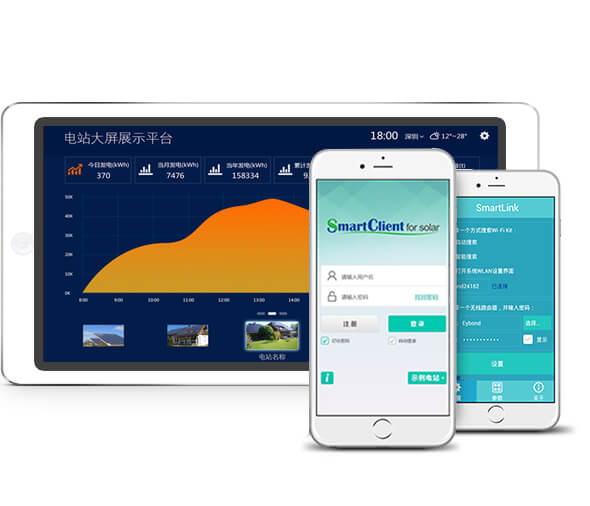
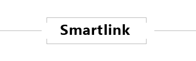
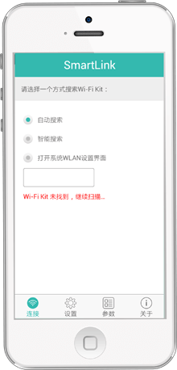
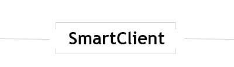
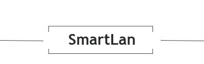
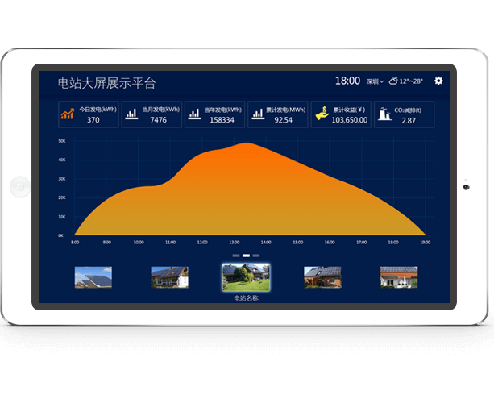

产品中心
APP下载
系统登录
设备适配器
数据采集器
工业路由器
服务器
客户端

客户端由SmartLink、SmartClient等产品组成
它们安装在移动设备上,实现实时监控
它们均采用模块化设计,可以根据行业应用场景不同做出相应调整
它们均有Android版本和iOS
产品中心
产品定位
本地组网
SmartLink
无线配置客户端
对数据采集器的参数进行配置；
查看监控对象的实时运行数据
SmartClient
便携式监控客户端
实时查看监控对象的运行状况
SmartLan
大屏幕监控客户端
在客厅，展会等场合展示监控
对象的运行状况

SmartLink App是一款无线Wi-Fi配置及监控终极端应用软件

便捷
无需外接显示屏,即可对数据采集器进行参数设置 无需外部网络,即可直接获取设备的运行参数
智能
自动扫描周围的数据采集器 自动匹配信号最强的数据采集器

SmartClient是一款的智能终端应用软件
智能
数据可视化，图表简明易懂
便捷
随时随地通过网络展示实时以及历史数据
丰富
多维度展示实时数据和历史数据
节省
上网产生的流量小，速度快

SmartLan是一款基于Android系统的监控应用软件，它可以对监控对象进行数据采集，并可以用投影仪，显示器等大屏显示出来

美观
动态图表展示，美观大气支持投影仪，大屏电视，体现企业形象
便捷
一键操作，简单设置基本参数即可展示，可通过客户端扫码登录
灵活
可作为本地服务器，可作为远程数据显示终端
自定义
用户可以对logo,背景，轮播内容等进行自定义设置